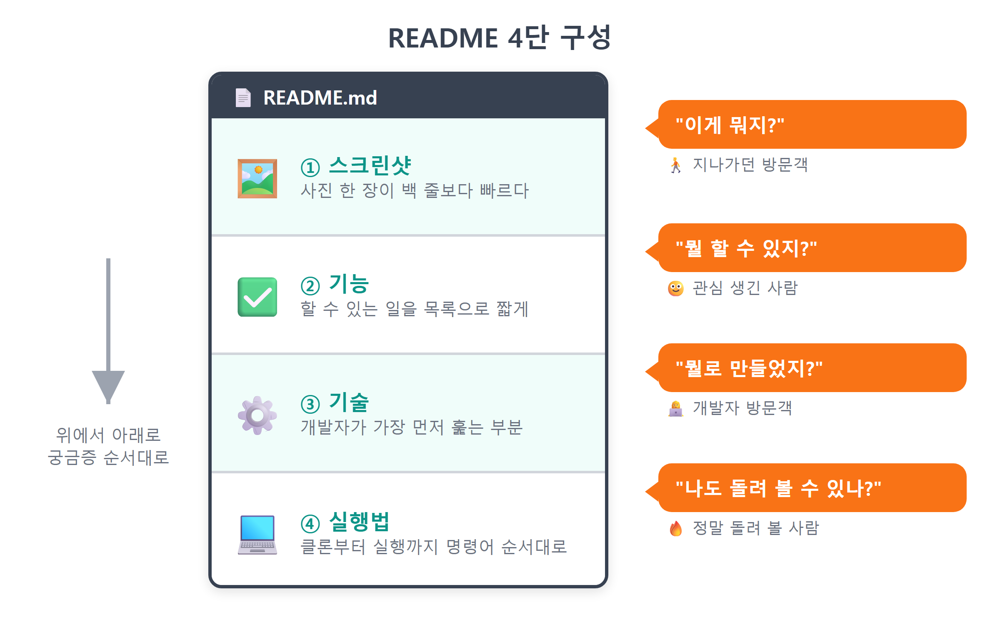
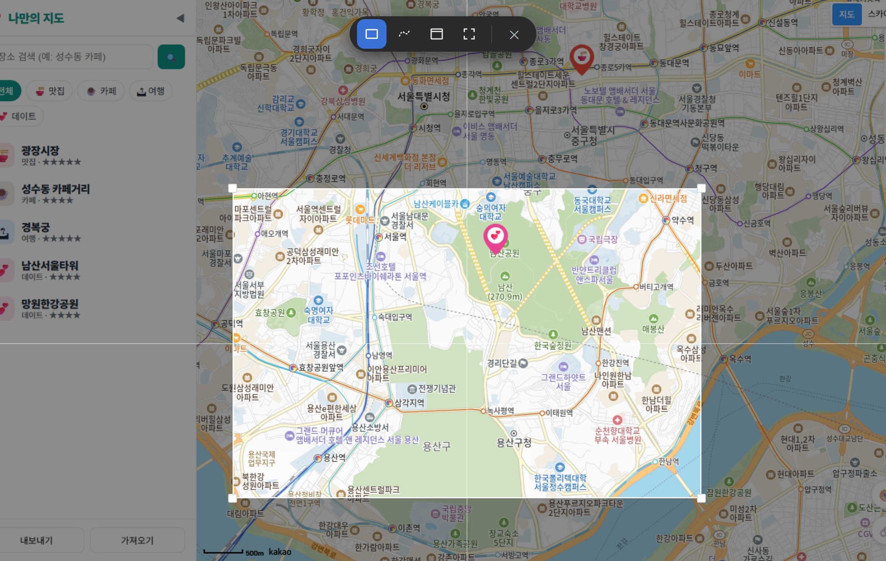
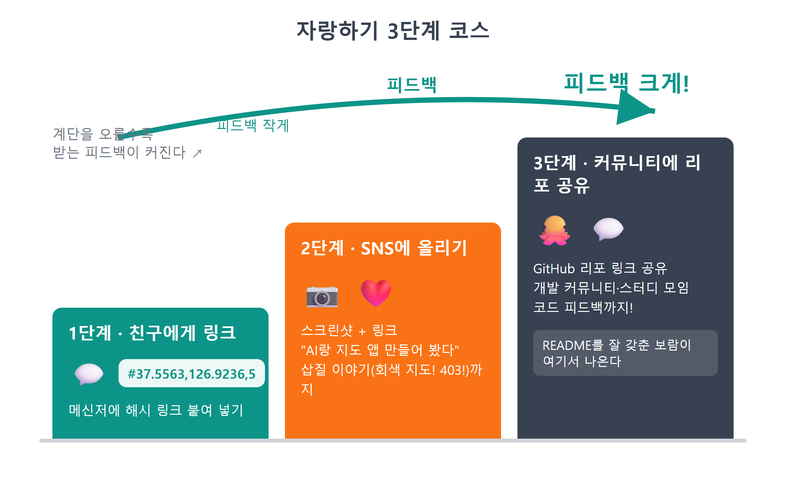
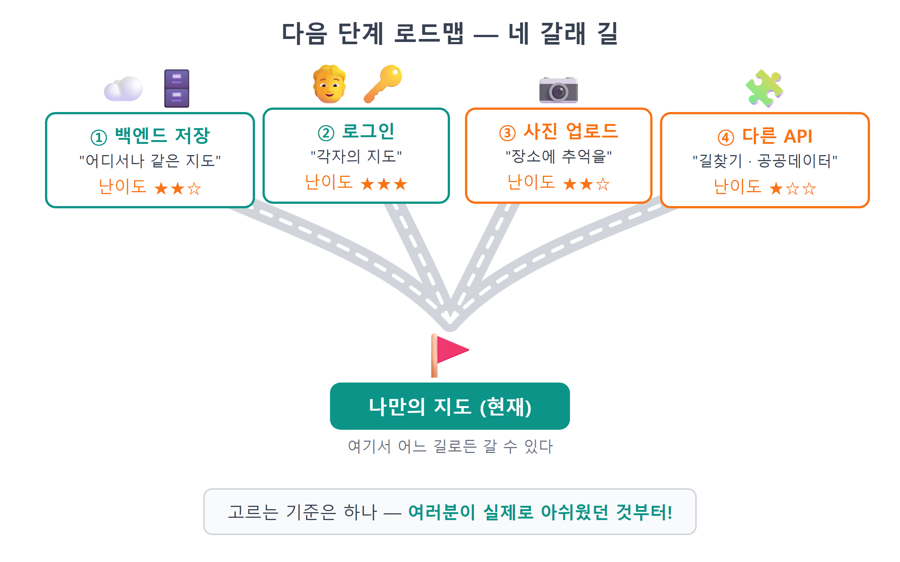
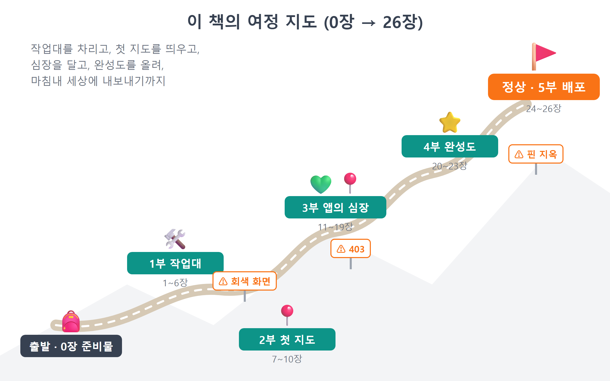

26장 README와 자랑하기¶
이 장에서 배우는 것
- 리포지토리의 얼굴인 README가 왜 중요한지, 어떤 구조로 쓰는지 배웁니다
- ++win+shift+s++ 캡처 도구로 앱의 대표 스크린샷을 찍고 리포에 넣습니다
- Claude Code에게 시켜 스크린샷·기능·기술·실행법이 담긴 README를 완성합니다
- 배포된 지도를 친구와 SNS에 자랑하는 요령을 익힙니다
- 백엔드 저장·로그인·사진 업로드·다른 API로 이어지는 다음 단계 로드맵을 그립니다
- 0장부터 여기까지, 바이브코딩 여정을 돌아보며 책을 마무리합니다
축하합니다. 여러분의 지도는 이제 인터넷에 살아 있습니다. 25장에서 GitHub Pages 배포가 끝난 순간, 여러분은 "코딩을 배워 보고 싶은 사람"에서 "웹 앱을 만들어 배포한 사람"이 되었습니다. 주소창에 https://여러분의아이디.github.io/my-map/을 치면 지구 반대편에서도 여러분의 지도가 열립니다. 스마트폰으로도, 친구의 노트북으로도요.
그런데 딱 하나가 비어 있습니다. 친구에게 리포지토리 링크를 보냈다고 상상해 보세요. 친구가 보는 것은 main.js, store.js 같은 파일 목록뿐입니다. 이게 지도 앱인지, 계산기인지, 뭘 눌러야 돌아가는지 아무 설명이 없습니다. 열심히 만든 앱이 설명서 없는 상자로 보이는 거죠. 이번 장에서는 그 상자에 얼굴을 그려 넣습니다. 바로 README입니다. 그리고 완성된 지도를 세상에 자랑하는 법, 여기서 더 나아갈 다음 단계 로드맵까지 다루고, 마지막으로 0장부터 이어 온 바이브코딩 여정을 함께 돌아보겠습니다. 이 책의 마지막 실습 장입니다. 편한 마음으로 시작합시다.
26.1 README — 리포지토리의 얼굴¶
README는 이름 그대로 "나를 읽어 주세요(Read me)"라는 파일입니다. 리포지토리 최상위에 README.md라는 이름으로 놓아 두면, GitHub가 리포 첫 화면에 이 파일을 자동으로 예쁘게 렌더링해서 보여 줍니다. 방문자가 코드를 한 줄도 열어 보기 전에 만나는 첫인상이죠. 확장자 .md는 마크다운(Markdown)1이라는 형식인데, 사실 여러분은 이미 마크다운 사용자입니다. 이 책의 원고도, Claude Code와 주고받는 대화도, #으로 제목을 달고 -로 목록을 만드는 그 문법이 전부 마크다운이니까요.
좋은 README에 정답 공식은 없지만, 개인 프로젝트라면 전 세계 개발자들이 암묵적으로 합의한 4단 구성이 있습니다. 위에서부터 읽는 사람의 궁금증 순서 그대로입니다.
- 스크린샷 — "이게 뭐지?"에 대한 답. 백 줄의 설명보다 사진 한 장이 빠릅니다. 제목 바로 아래, 가장 좋은 자리에 둡니다.
- 기능 — "뭘 할 수 있지?"에 대한 답. 목록으로 짧게. 우리 앱은 자랑할 게 열 개도 넘습니다.
- 기술 — "뭘로 만들었지?"에 대한 답. 개발자 방문객이 가장 먼저 훑는 부분이고, 나중에 여러분의 포트폴리오가 되는 부분입니다.
- 실행법 — "나도 돌려 볼 수 있나?"에 대한 답. 클론부터 실행까지 명령어를 순서대로. 우리 앱은 카카오 키가 필요하니
.env안내가 필수입니다.

그림 26.1 — README 4단 구성
이 구성이 강력한 이유는 읽다가 아무 데서나 떠나도 된다는 점입니다. 지나가던 사람은 스크린샷만 보고 갑니다. 관심 생긴 사람은 기능까지 읽습니다. 개발자는 기술을 확인하고, 정말 돌려 볼 사람만 실행법까지 내려옵니다. 모든 독자를 만족시키는 문서는 이렇게 층층이 씁니다.
💡 팁
README는 남을 위한 문서이면서 동시에 6개월 뒤의 나를 위한 문서입니다. 시간이 지나면 자기가 만든 앱의 실행법도 잊어버리는 게 사람입니다. "미래의 내가 아무것도 기억 못 한다"고 가정하고 쓰면 딱 좋은 친절함이 나옵니다.
26.2 대표 스크린샷 찍기 — ++win+shift+s++¶
README의 첫인상은 스크린샷이 결정하니, 글보다 사진을 먼저 준비합시다. 윈도우에는 캡처 프로그램을 따로 깔 필요가 없습니다. ++win+shift+s++ — 이 단축키 하나면 됩니다. 누르는 순간 화면이 살짝 어두워지면서 위쪽에 캡처 도구 막대가 나타나고, 마우스로 원하는 영역을 드래그하면 그 부분이 클립보드에 복사됩니다. 캡처 직후 화면 구석에 뜨는 알림을 클릭하면 편집 창이 열려서 자르거나 형광펜을 칠한 뒤 PNG 파일로 저장할 수 있습니다.
찍기 전에 무대를 정돈합시다. 배우가 제일 멋져 보이는 각도를 잡는 겁니다.
- 배포된 사이트(
https://여러분의아이디.github.io/my-map/)를 엽니다. localhost보다 주소창이 그럴듯합니다. - 지도를 여러분의 장소가 가장 몰려 있는 동네로 옮기고, 마커·말풍선·사이드바가 한 화면에 어우러지게 확대 레벨을 조절합니다. 말풍선을 하나 열어 두면 화면이 훨씬 생동감 있습니다.
- 개발자도구(++f12++)는 닫습니다. 브라우저 창을 적당히 키우고, 관계없는 탭이나 북마크바가 지저분하면 앱 영역만 드래그해서 담습니다.

그림 26.2 — Win+Shift+S 캡처 도구로 앱 화면 캡처
저장 위치도 정해 둡시다. 프로젝트 안에 docs 폴더를 만들고 screenshot.png로 저장하는 것을 추천합니다. src는 앱 코드의 집이니 문서용 이미지는 따로 사는 게 깔끔합니다. 이렇게 리포 안에 이미지를 넣어 두면 README에서  한 줄로 불러올 수 있고, 리포를 복제해 간 어디에서든 그림이 함께 따라갑니다.
⚠️ 주의
스크린샷도 공개 리포에 올라가는 공개 정보입니다. 지도의 말풍선·메모에 집 주소, 실명, 전화번호 같은 개인 정보가 보이지 않는지 캡처 전에 확인하세요. 상세 패널의 메모가 열려 있다면 특히요. 우리 지도는 "내가 아는 장소" 모음이라 무심코 사생활이 찍히기 쉽습니다. 그리고 24장에서 다짐한 것 한 번 더 — .env의 키는 스크린샷으로도 새어 나갈 수 있으니, 에디터 화면을 찍을 일이 있다면 .env 탭이 열려 있지 않은지 보세요.
26.3 README 작성 — 물론, 시켜서¶
재료가 모였으니 씁니다. 물론 우리 방식대로, Claude Code에게 시킵니다. 여기서 바이브코딩의 재미있는 지점이 하나 있는데, Claude Code는 우리 프로젝트를 이미 알고 있다는 겁니다. 25장까지 함께 만들어 온 코드가 전부 눈앞에 있으니, 기능 목록이나 기술 스택을 우리가 불러 줄 필요가 없습니다. 무엇을 넣을지 구조만 정확히 지시하면 됩니다. 4장에서 배운 프롬프트 4요소 중 출력을 유난히 자세히 쓰는 프롬프트가 되겠네요.
🗣 이렇게 시키세요
프로젝트 루트에 README.md를 한국어로 만들어줘. 구조는 ①제목과 한 줄 소개, 배포 주소(https://여러분의아이디.github.io/my-map/), ②스크린샷(docs/screenshot.png), ③주요 기능 목록, ④기술 스택, ⑤로컬 실행법(클론→npm install→.env에 VITE_KAKAO_JS_KEY 설정→npm run dev) 순서로. 기능과 기술은 src 코드를 직접 읽고 정리해줘. 카카오 JS 키 발급과 플랫폼 도메인 등록이 필요하다는 안내도 실행법에 넣어줘. 실제 키 값은 절대 쓰지 마.
Claude Code가 src 폴더를 스캔하더니 README를 만들어 줍니다. 핵심 부분을 함께 읽어 봅시다.
# 🗺️ 나만의 지도
카카오지도 위에 내 맛집·카페·여행지를 모으는 나만의 장소 지도입니다.
**바이브코딩**(AI에게 시켜서 만들기)으로 만들었습니다.
👉 **바로 써 보기: https://여러분의아이디.github.io/my-map/**

## 주요 기능
- 🗺️ 카카오지도 위에 카테고리별 커스텀 마커(🍜맛집/☕카페/🏝여행/💕데이트)
- 💬 마커 클릭 시 커스텀 오버레이 말풍선
- 🔍 키워드 장소 검색 → 내 지도에 바로 추가
- ➕ 지도 클릭으로 장소 추가, ⭐ 별점·메모 편집, 삭제
- 💾 localStorage 자동 저장 + JSON 내보내기/가져오기
- 🧭 내 위치 표시, 🔗 URL 해시로 현재 화면 공유
- 🔢 마커 클러스터러(장소가 많아도 깔끔), 📱 모바일 반응형
## 기술 스택
- Vanilla JavaScript (프레임워크 없음) + Vite
- Kakao Maps JavaScript SDK (services, clusterer)
- localStorage / GitHub Pages + GitHub Actions 배포
## 로컬에서 실행하기
```bash
git clone https://github.com/여러분의아이디/my-map.git
cd my-map
npm install
```
1. [카카오 개발자 콘솔](https://developers.kakao.com)에서 앱을 만들고
**JavaScript 키**를 발급받습니다.
2. 앱 설정 → 플랫폼 → Web에 `http://localhost:5173`을 등록합니다.
3. 프로젝트 루트에 `.env` 파일을 만들고 키를 넣습니다.
```
VITE_KAKAO_JS_KEY=여러분의_JS_키
```
4. 개발 서버를 켭니다.
```bash
npm run dev
```
26.1절에서 세운 4단 구성이 그대로 보이죠. 눈여겨볼 디테일이 몇 가지 있습니다. 제목 바로 아래 배포 주소를 굵게 박았습니다 — 방문자 입장에서 제일 반가운 건 "설치 없이 바로 써 보기"니까요.  줄이 26.2절에서 찍은 스크린샷을 불러오는 마크다운 이미지 문법입니다. 대괄호 안은 이미지가 안 뜰 때 대신 보여 줄 대체 텍스트고요. 실행법에는 우리가 7~8장에서 직접 겪은 관문이 정직하게 들어 있습니다. 카카오 키 발급, 플랫폼 등록, .env 작성 — 이 세 가지를 빼먹은 README였다면, 클론해 간 사람은 9장에서 우리가 만났던 그 회색 화면을 만나고 조용히 떠났을 겁니다. 내가 넘은 관문을 다음 사람을 위해 적어 두는 것, 그게 실행법 섹션의 본질입니다.
파일이 생겼으니 24장에서 몸에 익힌 대로 저장하고 올립니다. 스크린샷 파일도 함께요.
🗣 이렇게 시키세요
README.md와 docs/screenshot.png를 커밋하고 푸시해줘. 커밋 메시지는 "docs: README 추가 (스크린샷·기능·기술·실행법)"로.
푸시가 끝나면 브라우저에서 리포지토리를 새로고침해 보세요. 파일 목록 아래에 스크린샷과 기능 목록이 근사하게 펼쳐집니다. 설명서 없는 상자가 드디어 얼굴을 얻었습니다.
그림 26.3 — GitHub 리포 첫 화면에 렌더링된 README
💡 팁
리포 오른쪽 위 About(톱니바퀴 아이콘)에 한 줄 설명과 배포 URL도 등록해 두세요. 리포 목록이나 검색 결과에서는 README보다 About이 먼저 보입니다. Website 칸에 Pages 주소를 넣으면 리포 첫 화면에 클릭 가능한 링크가 항상 떠 있게 됩니다.
26.4 자랑하기 — 만든 자의 특권¶
배포 주소가 있고 README까지 갖췄으니, 이제 자랑할 시간입니다. 진심으로 하는 말인데, 이 단계를 건너뛰지 마세요. 만든 것을 남에게 보여 주는 순간 두 가지가 생깁니다. 하나는 동기 — "오, 이거 네가 만들었어?"라는 반응은 다음 프로젝트를 시작하게 하는 가장 강력한 연료입니다. 다른 하나는 피드백 — 사용자는 만든 사람이 상상도 못 한 방식으로 앱을 씁니다. 친구가 무심코 던진 "사진은 못 넣어?" 한마디가 그대로 다음 버전의 기획이 됩니다.
자랑의 난이도별 코스를 제안합니다.
- 1단계, 가족·친구에게 링크 보내기. 메신저에 배포 주소를 붙여 넣으면 끝입니다. 여기서 21장의 URL 공유 기능이 빛납니다. 그냥 주소가 아니라
#37.5563,126.9236,5처럼 여러분의 아지트가 보이는 화면 그대로 링크를 만들어 보내는 거죠. 받는 사람은 열자마자 "우리 동네네?"가 됩니다. - 2단계, SNS에 올리기. 26.2절에서 찍은 스크린샷에 링크를 곁들여 인스타그램 스토리든 X든 블로그든 올려 보세요. "코딩 몰랐는데 AI랑 같이 지도 앱 만들어 봤다"는 이야기 자체가 훌륭한 콘텐츠입니다. 만드는 과정에서 겪은 삽질(회색 지도! 403!)을 함께 쓰면 더 사랑받습니다.
- 3단계, 개발 커뮤니티에 공유하기. GitHub 리포 링크와 함께 개발 커뮤니티나 스터디 모임에 올리면 코드에 대한 피드백까지 받을 수 있습니다. README를 잘 갖춰 놓은 보람이 여기서 나옵니다.

그림 26.4 — 자랑하기 3단계 코스
한 가지만 미리 일러두겠습니다. 링크를 받은 친구의 지도에는 여러분의 장소가 보이지 않습니다. 17장에서 배웠듯 장소 데이터는 각자의 브라우저 localStorage에 있으니까요. 친구는 기본 장소만 있는 빈 지도에서 시작합니다. "어? 네 맛집 목록 어디 갔어?"라는 질문이 들어오면 당황하지 말고 17장의 내보내기 파일을 건네 가져오기로 읽게 하세요. 그리고 이 어색함이야말로, 바로 다음 절에서 이야기할 "다음 단계"가 필요한 이유입니다.
26.5 다음 단계 로드맵 — 지도는 계속된다¶
이 책의 지도는 완성됐지만, 여러분의 지도는 이제 시작입니다. 지금 앱의 한계를 정확히 알면 다음에 배울 것이 저절로 정해집니다. 난이도 순으로 네 갈래 길을 소개합니다. 각각이 책 한 권 분량의 세계라서 여기서는 문패만 달아 두지만, 방향을 아는 것과 모르는 것의 차이는 큽니다.
첫째, 백엔드 저장 — 데이터를 브라우저 밖으로. 지금은 장소가 localStorage에 살아서 브라우저를 바꾸면 지도가 초기화됩니다. 데이터를 서버의 데이터베이스에 저장하면 어느 기기에서 접속해도 같은 지도를 만납니다. Firebase나 Supabase 같은 서비스형 백엔드(BaaS)2를 쓰면 서버 컴퓨터를 직접 운영하지 않고도 시작할 수 있어서 첫걸음으로 좋습니다. store.js를 만들 때 저장을 save() 한 곳으로 모아 둔 설계가 여기서 진가를 발휘합니다 — 갈아 끼울 곳이 한 곳뿐이니까요.
둘째, 로그인 — 여러 사람의 지도. 백엔드가 생기면 자연스럽게 "누구의 데이터인가"라는 질문이 따라옵니다. 카카오 로그인 같은 소셜 로그인을 붙이면 사용자마다 자기 지도를 갖게 되고, 그다음엔 "커플이 함께 쓰는 데이트 지도", "친구들과 공동 편집하는 맛집 지도" 같은 진짜 서비스의 문이 열립니다.
셋째, 사진 업로드 — 장소에 추억을. 별점과 메모만으로는 아쉽죠. 그 집 대표 메뉴 사진 한 장이면 말풍선이 완전히 달라집니다. 파일 업로드, 이미지 저장소, 용량·보안 처리를 배우게 되는 갈래입니다.
넷째, 다른 API — 지도 위에 데이터를 얹기. 카카오지도 SDK에도 우리가 안 쓴 기능(길찾기 연동, 로드뷰, 도형 그리기)이 남아 있고, 세상에는 공공데이터포털의 무료 API가 수천 개 있습니다. 우리 동네 무인 도서 반납함, 전기차 충전소, 미세먼지 측정소… 7장에서 키 발급을, 15장에서 API 호출과 콜백을 이미 겪어 봤으니 여러분은 어떤 API 문서를 만나도 낯이 익을 겁니다.

그림 26.5 — 다음 단계 로드맵 네 갈래 길
무엇부터 갈지 고르는 기준은 하나면 충분합니다. 여러분이 실제로 아쉬웠던 것부터. 친구에게 지도를 못 보여 줘서 아쉬웠다면 백엔드+로그인부터, 말풍선이 심심했다면 사진부터. 필요가 이끄는 학습이 제일 오래갑니다. 그리고 어느 길을 고르든 진행 방식은 이 책에서 한 그대로입니다 — 작게 시키고, 확인하고, 커밋하고, 막히면 에러 메시지를 통째로 붙여 넣고.
💡 팁
다음 단계를 시작할 때도 첫 프롬프트는 계획부터 시키세요. "이 앱에 Supabase로 백엔드 저장을 붙이고 싶어. 코드를 고치기 전에, 어떤 파일을 어떻게 바꿔야 할지 단계별 계획만 먼저 보여줘." — 큰 공사일수록 설계도를 먼저 받아 보고 승인하는 습관이 사고를 막습니다.
26.6 바이브코딩 회고 — 우리가 걸어온 지도¶
마지막으로, 잠깐 뒤를 돌아봅시다. 0장에서 이 책은 여러분에게 낯선 약속을 하나 했습니다. "코드를 직접 치지 않고, AI에게 시켜서 만든다." 그 약속이 어떻게 지켜졌는지 여정을 펼쳐 보면 이렇습니다.
1부(1~6장)에서는 작업대를 차렸습니다. Node.js와 Git이라는 기반, Claude Code라는 파트너, GitHub라는 저장소, Orca라는 지휘소. 2부(7~10장)에서는 카카오 키를 발급받고 Vite 프로젝트에 첫 지도를 띄웠습니다. 회색 화면과 403의 쓴맛도 여기서 봤죠. 3부(11~19장)는 앱의 심장이었습니다. 마커, 데이터 설계, 말풍선, 필터, 검색, 추가, 저장, 목록, 상세 — 상태와 화면을 잇는 웹 앱의 뼈대를 아홉 장에 걸쳐 세웠습니다. 4부(20~23장)에서는 내 위치, URL 공유, 클러스터러, 모바일 대응으로 앱의 완성도를 끌어올렸고, 5부(24~26장)에서 세상에 내보냈습니다.

그림 26.6 — 이 책의 여정 지도 (0장→26장)
이 여정에서 여러분이 얻은 것은 지도 앱 하나가 아닙니다. 돌아보면 우리는 세 가지 근육을 계속 단련해 왔습니다.
첫째, 시키는 근육. 1장에서 "작게 시키기"를 약속했고, 실제로 그렇게 했습니다. "지도 앱 만들어줘"라고 시킨 적은 한 번도 없습니다. "SDK 주소에 clusterer를 추가해줘, 다른 부분은 건드리지 마"처럼 맥락과 목표와 제약을 갖춘 작은 주문을 수십 번 쌓았죠. 이 책의 프롬프트들을 다시 훑어 보면(부록 A에 모아 뒀습니다) 좋은 지시의 패턴이 보일 겁니다. 이 근육은 AI 도구가 무엇으로 바뀌어도 그대로 쓰입니다.
둘째, 읽는 근육. 우리는 코드를 외우지 않았지만, AI가 만들어 온 코드를 매번 함께 읽었습니다. autoload=false가 왜 필요한지, subscribe가 어떻게 화면을 자동 갱신하는지, escapeHtml이 무엇을 막는지. "이해하려 노력하되 외우지 않는다" — 1장의 이 철학 덕분에 여러분은 AI가 이상한 코드를 가져왔을 때 알아챌 수 있는 감식안을 갖게 됐습니다. 바이브코딩에서 사람의 역할은 타이핑이 아니라 판단이라는 것, 이제 몸으로 아실 겁니다.
셋째, 되돌리는 근육. git은 3장에서 "안전벨트"라고 소개했는데, 여정 내내 정말 그 역할을 했습니다. 커밋이 있었기에 우리는 겁 없이 시도할 수 있었습니다. 실험이 망하면 되돌리면 되니까요. 안전하게 실패할 수 있는 환경이 과감한 학습을 만든다는 것 — 이건 코딩 바깥에서도 통하는 진리입니다.
이 세 근육을 가진 사람을 뭐라고 불러야 할까요. 저는 "만들 줄 아는 사람"이라고 부르고 싶습니다. 머릿속 아이디어를 말로 정리해 AI에게 시키고, 결과를 읽고 판단하고, 실패를 되돌리며 완성까지 끌고 가는 사람. 여러분은 이제 그런 사람입니다. 이 책의 지도는 여기서 끝나지만, 여러분의 다음 지도는 백지부터 시작해도 됩니다. 무엇이든 만들고 싶은 것이 생기면, 터미널을 열고 이렇게 시작하세요. "새 프로젝트를 시작하고 싶어. 계획부터 세워 보자."
즐겁게 만드세요. 그리고 만든 것을 꼭 자랑하세요.
26.7 마무리¶
📌 핵심 요약
- README는 리포지토리 첫 화면에 자동 렌더링되는 프로젝트의 얼굴로, 스크린샷 → 기능 → 기술 → 실행법의 4단 구성이 기본입니다
- 윈도우 캡처는 ++win+shift+s++ 하나면 충분하며, 스크린샷은
docs/폴더에 넣어로 README에 싣습니다 - 실행법에는 카카오 JS 키 발급·플랫폼 등록·
.env작성 등 내가 넘은 관문을 빠짐없이 적어야 다음 사람이 회색 화면을 만나지 않습니다 - 공유 링크를 받은 사람에게는 내 localStorage 장소가 보이지 않습니다 — 내보내기/가져오기로 전달하거나, 백엔드 저장이 다음 단계입니다
- 다음 단계 로드맵은 백엔드 저장, 로그인, 사진 업로드, 다른 API 네 갈래이며, 실제로 아쉬웠던 것부터 고르면 됩니다
- 바이브코딩의 핵심 근육은 작게 시키기, 읽고 판단하기, 되돌리기 — 도구가 바뀌어도 남는 능력입니다
🤔 생각해보기
Q1. 여러분의 README 실행법을 처음 보는 친구가 그대로 따라 한다고 상상해 보세요. 어느 단계에서 막힐 것 같은가요? 그 단계에 어떤 안내를 한 줄 더 넣으면 좋을까요?
✍️ ________
✍️ ________
Q2. 26.5절의 네 갈래 길(백엔드 저장·로그인·사진 업로드·다른 API) 중 여러분이 가장 먼저 가고 싶은 길은 무엇인가요? 이 앱을 쓰면서 실제로 아쉬웠던 순간을 근거로 골라 보세요.
✍️ ________
✍️ ________
✏️ 연습 문제
- ++win+shift+s++ 로 앱의 대표 스크린샷을 찍어
docs/screenshot.png로 저장하고, README에서 불러와 GitHub에서 그림이 보이는지 확인해 보세요. - Claude Code에게 시켜 README에 "만들면서 배운 것" 섹션을 추가해 보세요. 이 책에서 가장 기억에 남는 삽질(예: 회색 지도, 403)과 해결 과정을 세 줄로 적는 겁니다.
- 21장의 URL 공유 버튼으로 여러분의 아지트가 보이는 링크를 만들어 친구 한 명에게 실제로 보내 보세요. 어떤 반응이 오는지, 어떤 기능을 물어보는지 기록해 두세요 — 그게 다음 버전 기획서입니다.
- 리포지토리 About에 한 줄 소개와 배포 URL을 등록하고, 리포 첫 화면에서 링크가 클릭되는지 확인해 보세요.
🔎 더 찾아보기
shields.io— README 상단에 붙이는 배지(빌드 상태, 라이선스 등) 생성 서비스오픈소스 라이선스 (MIT License)— 공개 리포에 "이 코드를 이렇게 써도 됩니다"를 밝히는 문서Firebase / Supabase— 서버 없이 시작하는 서비스형 백엔드(BaaS), 백엔드 저장·로그인의 첫걸음공공데이터포털 (data.go.kr)— 지도에 얹을 수 있는 무료 공공 API 수천 종GitHub Profile README— 아이디와 같은 이름의 리포를 만들면 프로필 첫 화면이 되는 특별한 README
다음 장 예고 — 본편은 여기서 끝이지만, 책을 덮기 전에 챙겨 갈 선물이 두 개 남았습니다. 부록 A에는 이 책의 모든 장에서 썼던 핵심 프롬프트에 더해 버그 잡기·리팩토링·설명 요청·되돌리기 같은 상황별 프롬프트 템플릿을 한데 모았습니다. 다음 프로젝트를 시작할 때 옆에 펴 두고 쓰는 치트키입니다.